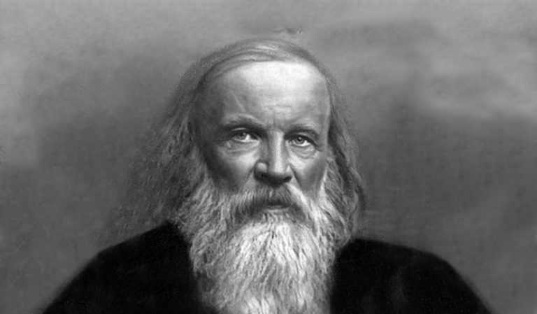

Origen de la tabla periodica
La Tabla periódica es una herramienta gráfica y conceptual que organiza la totalidad de los elementos químicos conocidos por la humanidad según su número atómico (o sea, el número de protones en su núcleo atómico) y sus demás propiedades químicas esenciales.
La primera versión de este modelo conceptual fue publicada en 1869 en Alemania por el químico de origen ruso Dimitri Mendeléyev (1834-1907), quien había descubierto la existencia de un patrón reconocible entre los elementos, útil para clasificarlos y organizarlos gráficamente. Su nombre provino de la hipótesis de Mendeléyev de que el peso atómico determinaba las propiedades periódicas de los elementos.
La primera Tabla periódica disponía en seis columnas a los 63 elementos descubiertos para entonces, y fue universalmente aceptada y celebrada por los estudiosos del tema. Se consideró una mejoría notoria de los primeros intentos de sistematización de los elementos, propuestos por Antoine Lavoisier, o de las primeras tablas creadas por André-Emile Béguyer de Chancourtois (una “hélice telúrica”) en 1862, y Julius Lothar Meyer en 1864.
Además de crear la Tabla periódica, Mendeléyev la utilizó como herramienta para deducir la necesaria existencia de elementos todavía no descubiertos, predicción que se cumplió más adelante cuando comenzaron a descubrirse muchos de los elementos que llenaban los espacios en blanco de su tabla.
Sin embargo, desde entonces la Tabla periódica se ha reconcebido y reformulado varias veces, ampliando los átomos descubiertos o sintetizados posteriormente. El propio Mendeléyev creó una segunda versión en 1871. La estructura actual fue diseñada por el químico suizo Alfred Werner (1866-1919) a partir de la tabla original, y la disposición gráfica estándar se le atribuye al químico estadounidense Horace Groves Deming.
Una nueva versión de la tabla fue presentada por el costarricense Gil Chaverri (1921-2005) tomando en cuenta la estructura electrónica de los elementos, en lugar de su número de protones. Sin embargo, la aceptación de la versión tradicional hoy en día es absoluta.
Creador de la tabla periodica
Dmitri Ivánovich Mendeléyev era el menor de al menos 17 hermanos de la familia formada por Iván Pávlovich Mendeléyev y María Dmítrievna Mendeléyeva.2 En el mismo año en que nació, su padre quedó ciego perdiendo así su trabajo, era el director del colegio del pueblo. Uno de los mayores rasgos físicos era su enorme barba la cual según dicen los historiadores solo se afeitaba una vez al año.En 1862 se casó con Feozva Nikítichna Leschiova con la que tuvo tres hijos, uno de los cuales falleció. Este fue un matrimonio infeliz y desde 1871 vivieron separados. Fue acusado de bígamo, pues una vez divorciado de su esposa volvió a contraer matrimonio, sin esperar los siete años que exigía la legislación rusa. Encontró la felicidad casándose con Anna Ivánovna Popova, 26 años menor que él. Para lograrlo, Mendeléyev estuvo cuatro años desesperado, incluso llegó a caer en una depresión, debido a que su mujer se negaba a concederle el divorcio y la familia de Anna se oponía tajantemente. A punto de darse por vencido, consiguió el divorcio de su esposa y fue en busca de Anna que se encontraba en Roma. En 1882 contrajeron matrimonio. Tuvieron cuatro hijos, la mayor de los cuales, Liubov, se casaría con el poeta ruso Aleksandr Blok. Aunque es más conocido en Occidente por haber creado la Tabla periódica de los elementos, la contribución de Dmitri Mendeléyev al desarrollo de Rusia fue muy vasta y por ello es reconocido como una verdadera personalidad del Renacimiento ruso. Sus campos de estudio variaron desde la química hasta la aeronáutica.Mendeléyev fue uno de los más grandes maestros de su tiempo y se le atribuye el mérito de haber educado a miles de estudiantes. Falleció el 2 de febrero de 1907, casi ciego. Se considera a Mendeléyev un genio, no solo por el ingenio que mostró para aplicar todo lo conocido y predecir lo no conocido sobre los elementos químicos y plasmarlo en la tabla periódica, sino por los numerosos trabajos realizados a lo largo de toda su vida en diversos campos de la ciencia, agricultura, ganadería, industria y petróleo.
Descubrimiento de los elementos químicos
Aunque algunos elementos como el oro (Au), plata (Ag), cobre (Cu), plomo (Pb) y mercurio (Hg) ya eran conocidos desde la antigüedad, el primer descubrimiento científico de un elemento ocurrió en el siglo xvii d. C., cuando el alquimista Hennig Brand descubrió el fósforo (P).13 En el siglo xviii d. C. se conocieron numerosos nuevos elementos, los más importantes de los cuales fueron los gases, con el desarrollo de la química neumática: oxígeno (O), hidrógeno (H) y nitrógeno (N). También se consolidó en esos años la nueva concepción de elemento, que condujo a Antoine Lavoisier a escribir su famosa lista de sustancias simples, donde aparecían 33 elementos. A principios del siglo xix d. C., la aplicación de la pila eléctrica al estudio de fenómenos químicos condujo al descubrimiento de nuevos elementos, como los metales alcalinos y alcalino-térreos, sobre todo gracias a los trabajos de Humphry Davy. En 1830 ya se conocían 55 elementos. Posteriormente, a mediados del siglo xix d. C., con la invención del espectroscopio, se descubrieron nuevos elementos, muchos de ellos nombrados por el color de sus líneas espectrales características: cesio (Cs, del latín caesĭus, azul), talio (Tl, de tallo, por su color verde), rubidio (Rb, rojo), etc. Durante el siglo xx d. C., la investigación en los procesos radioactivos llevó al descubrimiento en cascada de una serie de elementos pesados (casi siempre sustancias artificiales sintetizadas en laboratorio, con periodos de vida estable muy cortos), hasta alcanzar la cifra de 118 elementos con denominación oficialmente aceptados por la IUPAC en noviembre de 2016.